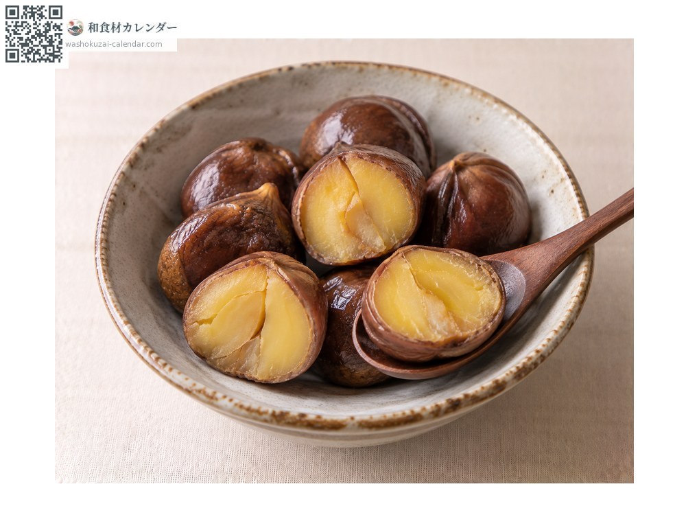
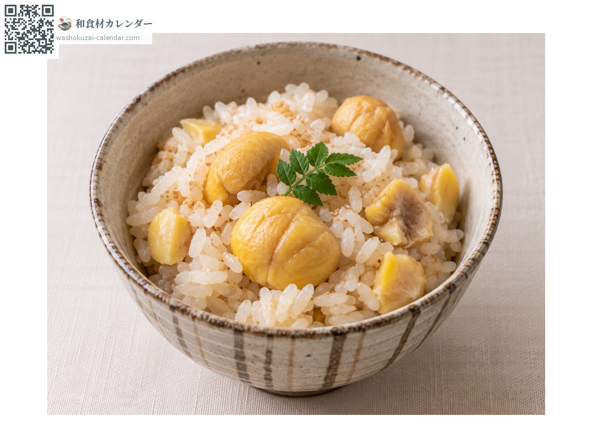
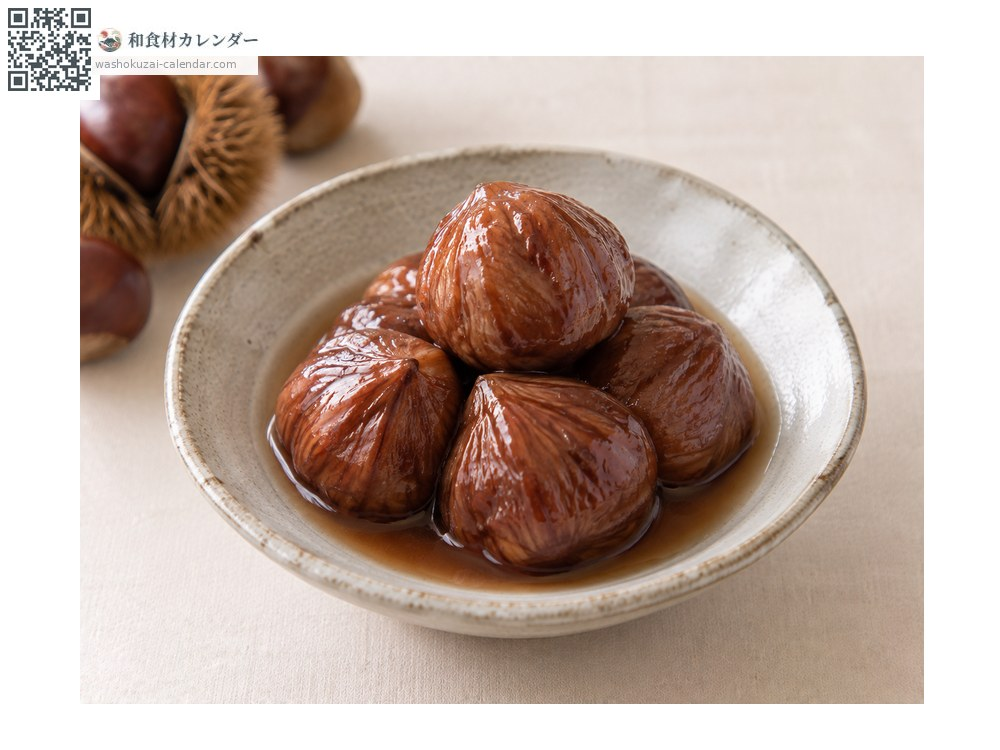
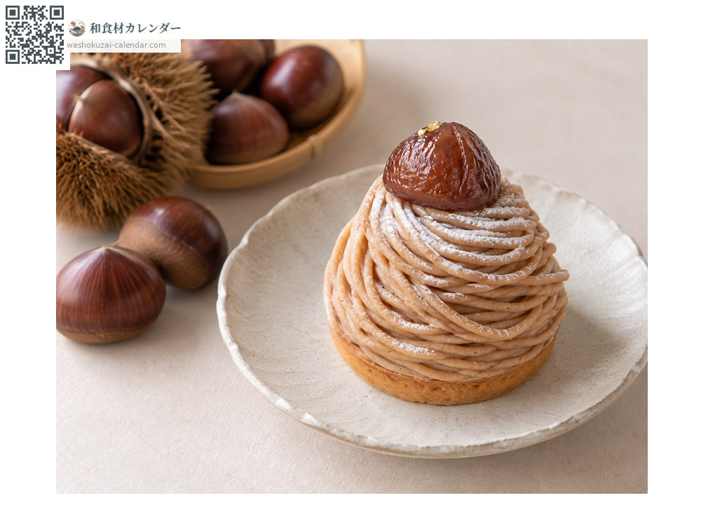

水果
板栗
クリ くり kuri
别名kuri
应季时期为9月、10月、11月

应季时期
1月
2月
3月
4月
5月
6月
7月
8月
9月
10月
11月
12月
应季有供应
烹饪方法

水煮板栗
对半切开用汤匙挖着吃。

板栗炊饭
与米一同炊煮。

带涩皮糖煮板栗
保留涩皮以糖浆炖煮。

板栗蒙布朗
用于西式甜点。
挑选方法
外壳紧绷有光泽、拿起来有重量感。有小孔代表被虫蛀过。
保存方法
放在微冻室约一周会变甜。要长期保存就水煮后冷冻。
主要产地
小知识
在0度左右贮藏，淀粉会转为糖分，据说甜度可增加数倍。